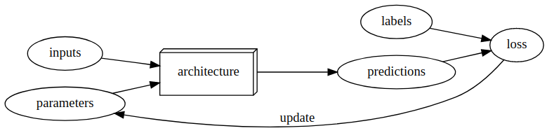

Questionnaire
Q1
Do you need these for deep learning?
- Lots of math
- False
- Lots of data
- False
- Lots of expensive computers
- False
- A PhD
- False
Q2
Name five areas where deep learning is now the best in the world.
- Medical research
- Robotics
- Assurance
- Linguistics/ Natural Lunguage Processing
- Biology
Q3
What was the name of the first device that was based on the principle of the artificial neuron?
- Percepton
Q4
Based on the book of the same name, what are the requirements for parallel distributed processing (PDP)?
- Set of processing units
- A state of activation
- An output function for each unit
- Pattern of connectivity among units
- Propagation rule for propagating patterns of activities through the network of connectivities
- An activation rule for combining the inputs impinging on a unit with the current state of that unit to produce an output for the unit
- Learning rule whereby patterns of connectivity are modified by experience
- An environment within which the system must operate
Q5
What were the two theoretical misunderstandings that held back the field of neural networks?
Minsky in his book Perceptons shows the limitation of the device “perceptons” and how it cannot solve any comlex problem, the ai community did agreed with Minsky, but the did not pay attention to the solution he suggested, which is a 2 layer model.
In 80’s the 2 layer models were usual in ai labs. In theory a 2 layer model can solve any problem, but in practice the layers were too big and consum a lot of computation power, the solution to this is to add more layers, but this insight was not acknowledged, what leat to the 2 winter of NN.
Q6
What is a GPU?
It’s a Graphic Prossessing Unit, which is used to do many computation tasks in parallel, which help to accelerate to compution of big tasks by cutting them into small tasks and compute them in parallel
Q7
Why is it hard to use a traditional computer program to recognize images in a photo?
to write a programm that recognize images in a photo we need to write a long set of rules that resume any possible photo and image, tell the computer exactly how to deal with any of them, which is way more complicated that what we can do. That’s way we use machine learning to solve those kinfd of problems, just by showing the model data and help it to learn from it.
Q8-9-10
What did Samuel mean by “Weight Assignment”?
What term do we normally use in deep learning for what Samuel called “Weights”?
Draw a picture that summarizes Arthur Samuel’s view of a machine learning model
weight Assignment is refer to the parameters of the model, these are what we call today weights and bias. they are set of value we assign to each data point, what make the optimization of the loss possible.
Q11
Why is it hard to understand why a deep learning model makes a particular prediction?
This is a highly-researched topic known as interpretability of deep learning models. the natur of deep learning “deep” make it hard to really understand the way the model solve each problem, specially if the model has many layers, what makes it even hard to know exactly which layer is responsable of the procces of learning which part.
Q12
What is the name of the theorem that shows that a neural network can solve any mathematical problem to any level of accuracy?
Universal approximation theorem
Q13
What do you need in order to train a model?
In order to train a model, we need architecture for the given problem, we first need data(+labels), then we need set of values (paramaters), then we need some kind of metric to know if our model did good or bad (loss function), and we need a way to updates these parameters in order to optimize the loss function.
Q14
How could a feedback loop impact the rollout of a predictive policing model?
In a predictive policing model, we might end up with a positive feedback loop, leading to a highly biased model with little predictive power. For example, we may want a model that would predict crimes, but we use information on arrests as a proxy . However, this data itself is slightly biased due to the biases in existing policing processes. Training with this data leads to a biased model. Law enforcement might use the model to determine where to focus police activity, increasing arrests in those areas. These additional arrests would be used in training future iterations of models, leading to an even more biased model. This cycle continues as a positive feedback loop
Q15
Do we always have to use 224x224 pixel images with the cat recognition model?
No.
Q16
What is the difference between classification and regression?
Classification problem is when we need to decide between 2(or more) classes, the prediction in this problem isn’t quantity, where regression problem is focused on predecting numeric quantity.
Q17
What is a validation set? What is a test set? Why do we need them?
Validation set is small portion of the data set that we preserve from the training fase in order to prevent the model from memorizing the data instead of learning from it. The validation set allow us to measure the performance of the model on data that the model didn’t see before. Same we can say about test set, which is another preserved protion of data that we use in the final fase of the training in order to have a real idea of model performance.
Q18
What will fastai do if you don’t provide a validation set?
it will automatically create a validation set of 20% of our dataset.
valid_pct=0.2
Q19
What is overfitting?
is when the model is memorizing answears instead of learning from data.
Q20
What is a metric? How does it differ to “loss”?
Metric is what tells us how the model perform, in other way the loss is what we should minimize in order to optimize the model perfromance.as we will see later, sometimes, we could use the metric as loss.
Q21
How can pretrained models help?
pertrained model can be used again, we just need to fin it in our probem.
a pretrained model is a model that learned many lesson from the prior problem, and already has good set of paramters, these parameters(weights+biases) are what we seek in the proccess of using a pretrained model. this procces is called fine-tunning, which mean less money and time consuming.
Q22
What is the “head” of a model?
When using a pretrained model, the later layers of the model, which were useful for the task that the model was originally trained on, are replaced with one or more new layers with randomized weights, of an appropriate size for the dataset you are working with. These new layers are called the “head” of the model.
Q23
What is an “architecture”?
The architecture is the template or structure of the model we are trying to fit. It defines the mathematical model we are trying to fit.
Q24
What are “hyperparameters”?
Training models requires various other parameters that define how the model is trained. For example, we need to define how long we train for, or what learning rate (how fast the model parameters are allowed to change) is used. These sorts of parameters are hyperparameters.
Further Research
- Why is a GPU useful for deep learning? How is a CPU different, and why is it less effective for deep learning?
What is a GPU? What make it different from CPU? and Why do we need it to do Deep Learning tasks:
- GPU stands for Graphic Processing Unit, is a specialized processor with dedicated memory that conventionally perform floating point operations required for rendering graphics.
- In other words, it’s a single-chip processor used for extensive graphical and mathematical computations which help the CPU to achieve other tasks.
- While CPU is designed to handel the complex logic in code once at a time, GPU can do many small operations at the same time, which make it very convenient to deep learning where we need to do many milions of calculations in order to train a model
Why do Deep Learning needs GPU?
- GPUs are optimized for training neural networks models as they can process multiple computations simultaneously.
- For example the model we’ve fine-tuned in chapter one resnet18 which the smaller version of resnet models with only 18 hidden layers,though it has more than 11 millions parameters, in order to do one epoch and calculate all these parameter (wights + biases) and multiply them by the input variables (images) then do the Back-probagation and update them after calculating the loss … all this multiplications will take a large amount of time if we did it on CPU.